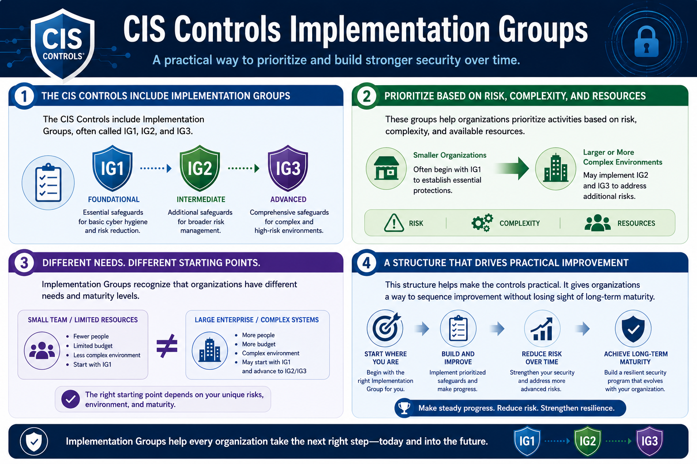

What Are the CIS Controls?
Implementation Groups
Connecting to LMS... Progress: in progress
Version 1.0 | Date: 2026-06-16 | Educational guidance for understanding CIS Controls concepts.

Narration
The CIS Controls include Implementation Groups, often called IG1, IG2, and IG3.
These groups help organizations prioritize activities based on risk, complexity, and available resources. Smaller organizations often begin with IG1, while larger or more complex environments may implement additional safeguards.
Implementation Groups recognize that organizations have different needs and maturity levels. A small team with limited resources may need a different starting point than a large enterprise with complex systems.
This structure helps make the controls practical. It gives organizations a way to sequence improvement without losing sight of long-term maturity.